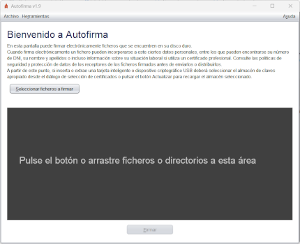
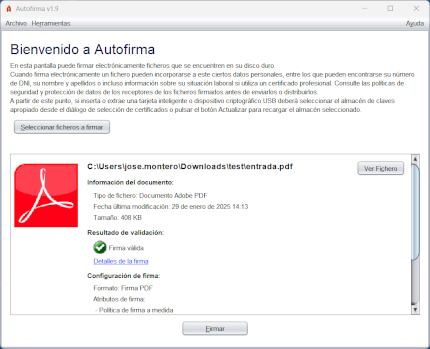
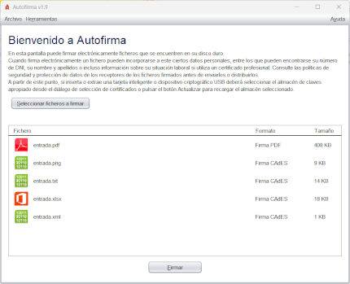
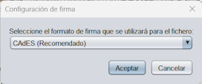

Desde esta pantalla puede selecionar los documentos o directorios que desea firmar.

Puede seleccionar uno o varios documentos pulsando el botón "Seleccionar ficheros a firmar" o arrástrando los documentos y/o directorios al área indicada (el recuadro de color gris oscuro).
Al cargar los documentos a firmar, se le mostrarán ciertos detalles sobre estos, que variarán según se seleccione un único fichero o varios:
 
En el recuadro habilitado para arrastrar los documentos que deseaban firmar le habrá aparecido la información del fichero o ficheros que haya seleccionado.
Si sólo seleccionó un fichero y dispone de una aplicación predeterminada para este tipo de documentos, le aparecerá el botón "Ver fichero" con el que podrá abrirlo. Además, le aparecerá la información relativa al fichero y a la firma que se va a generar (formato, atributos de firma y opciones de firma). En el caso de haber configurado datos para el formato de firma seleccionado que se vaya a incluir en la propia firma, como la política de firma, se mostrará un enlace "Ver todos..." desde la que se podrán visualizar todos los atributos de firma definidos.
Si se seleccionaron varios ficheros o directorios, puede hacer doble clic sobre ellos para abrirlos o pulsar con el botón secundario del ratón para ver las opciones de "Ver fichero" y "Ver los atributos de firma".
El botón "Firmar" situado en el lado inferior de la pantalla le permitirá firmar el documento. Si el almacén de certificados de su sistema operativo todavía no hubiese terminado de cargarse, el botón aparecerá deshabilitado y con una imagen animada de espera. En ese caso, por favor, espere a que esta desaparezca y se habilite el botón.
Una vez pulsado el botón, el programa generará una firma para cada documento seleccionado. Para cada tipo de documento se generará la firma con el formato establecido a desde el panel de preferencias.
En caso de que se desee firmar en otro formato distinto el fichero ya seleccionado, se permitirá modificar seleccionando el enlace "(Cambiar)" que se encuentra junto a la información sobre el formato. Al seleccionarlo, se abrirá la siguiente ventana donde se permite elegir el formato deseado:

Los tipos de documento que se distinguen y los formatos de firma que admiten se muestran en la siguiente tabla:
| Tipo de documento | Icono | Formatos de firma (resaltado el por defecto) |
|---|---|---|
| PAdES, CAdES y XAdES. | ||
| XML | XAdES y CAdES. | |
| Factura electrónica | FacturaE, CAdES y XAdES. | |
| OOXML | CAdES, XAdES y OOXML (Office Open XML). | |
| ODF | CAdES, XAdES y ODF (Open Document Format). | |
| Resto de documentos | CAdES y XAdES. | |
| Firma electrónica | El mismo de la firma original. |
Como excepción a este último caso, no se puede volver a firmar una factura electrónica ya firmada en formato Factura-e.
Al firmar ficheros, se mostrará una ventana para el guardado de la firma generada si sólo se seleccionó un documento o un diálogo para seleccionar el directorio de salida si se seleccionaron varios. Tras guardar las firmas, se mostrará la pantalla de detalle de firma.
El proceso de firma puede verse alterado por los plugins instalados en Autofirma. Consulte el apartado de gestión de plugins para saber más sobre ellos.
De forma complementaria a los botones y elementos gráficos, puede usar también la barra de menú o los siguientes aceleradores de teclado:
Control (⌘ en macOS) + S : Seleccionar fichero.Control (⌘ en macOS) + F : Firmar el fichero seleccionado.Puede configurar el formato de firma a utilizar por cada tipo de fichero y las particularidades de estos formatos, así como el comportamiento general de la aplicación, a partir del panel de preferencias disponible a través del menú Opciones.
Algunos formatos u opciones de firma pueden hacer aparecer opciones de configuración adicionales en la propia ventana de firma:
La firma PDF de un único documento permite configurar el que la firma se muestre en el documento. Para ello será necesario marcar la casilla "Hacer la firma visible dentro del PDF".
También es posible insertar una marca visible en el PDF al tiempo de realizar la firma. Esta opción modificará el PDF agregándole la imagen seleccionada y, seguidamente, lo firmará. Para usar esta función será necesario marcar la casilla "Insertar marca visible en el PDF". Esta casilla estará deshabilitada si el documento PDF ya está firmado, ya que la inserción de una marca invalidaría las firmas anteriores.
Otra opción disponible sería la de generar un PDF certificado, será posible si la firma a realizar es formato PAdES y el documento no está previamente firmado. Se realiza al marcar la casilla "Generar PDF certificado", y se aplica al documento el nivel de certificación seleccionado en la lista de opciones bajo dicha casilla. El listado de opciones estará deshabilitado si la casilla "Generar PDF certificado" no está habilitada.
Estas opciónes aparecerán marcadas o no por defecto según se haya establecido en el panel de preferencias. Al seleccionar cualquiera de estas casillas, se nos mostrará el panel de Propiedades de elementos visibles en PDF.
Al agregar una nueva firma binaria o XML a un documento de firma, se permite configurar si la nueva firma se realizará sobre el propio documento (cofirma) o sobre las firmas ya introducidas (contrafirma). Esta opción puede configurarse desde el panel de preferencias de los formatos CAdES y XAdES. Cuando aplique, Autofirma mostrará al usuario un botón "Opciones Avanzadas" desde el que poder acceder directamente a estas opciones de configuración.
En los procesos de firma de múltiples documentos se omite cualquier configuración que obligue a detener el proceso de firma. Así, por ejemplo, se omitirá la solicitud de contraseña de los PDF y la configuración de firma visible y marca visible se pedirá una única vez y se aplicará a todos los documentos con la misma configuración.